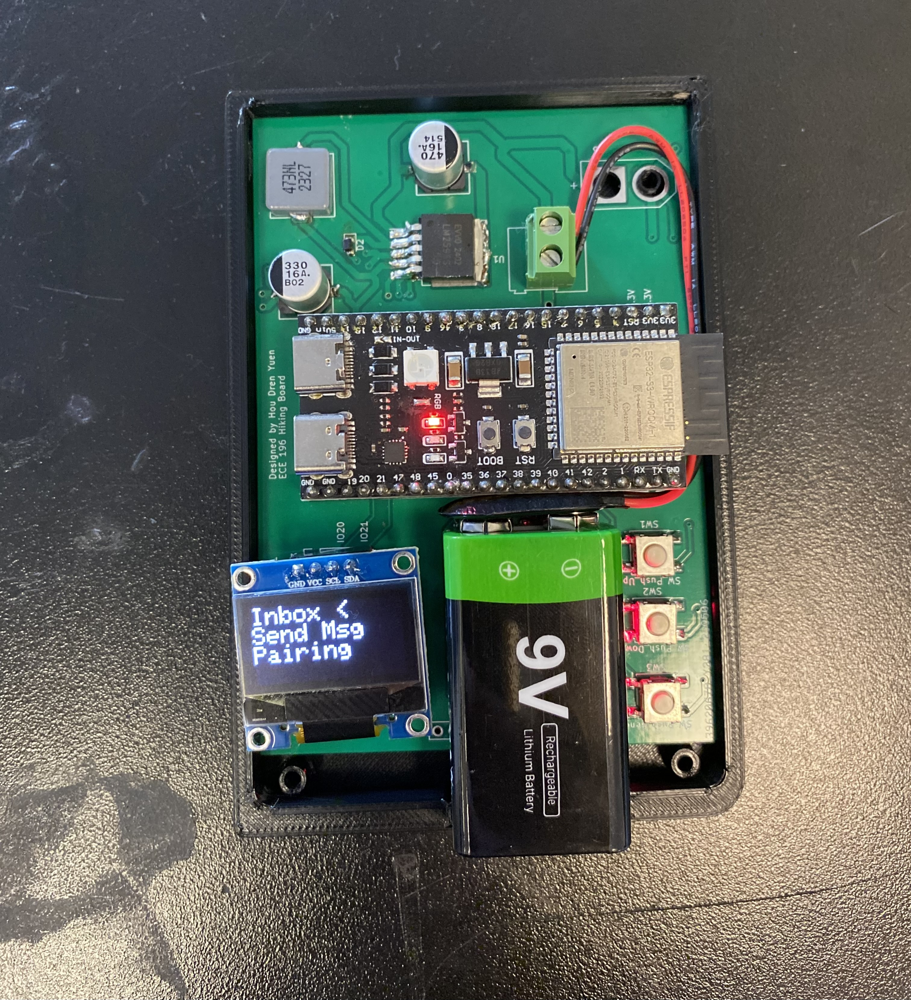

Decentralized Communication Device

Overview
This project tackles the problem of unreliable or unavailable communication during group hikes in remote areas. We designed and prototyped a decentralized communication device that allows group members to send and receive short predefined messages without relying on cell service, Wi-Fi, or GPS.
Each device uses ESP32 microcontrollers and the ESP-NOW protocol to form a low-power peer-to-peer mesh network. The interface includes a menu system with options for pairing, sending messages, and viewing an inbox. Our goal was to create a lightweight, user-friendly solution that improves safety and coordination in off-grid environments.
Design Approach
- Built around the ESP32 microcontroller and leverages the ESP-NOW protocol to enable decentralized, peer-to-peer communication without any central server, router, or base station
- Each device can send and receive predefined short messages to and from paired group members, forming a lightweight mesh network
- Interface is built with a simple menu system controlled by a push button and OLED screen.
- Users can access three core features: Inbox (view received messages), Send Message (select and broadcast a message), and Pairing (join/create a communication group).
Challenges
One of the biggest challenges was implementing a custom broadcast-based message propagation system. Each message consisted of the sender’s MAC address and a predefined message ID. Devices maintained a queue of their own message plus unique messages received from others. When a message queue was received, it was parsed: if a message was from a paired device, it was added to the inbox; if it was from an unknown device but not yet in the local queue, it was added and rebroadcast. This allowed all devices to relay messages without needing direct links, while still preserving privacy and inbox clarity for only paired members.
Managing reliable communication between devices using the ESP-NOW protocol. Since ESP-NOW requires knowing each device’s MAC address ahead of time, we had to design a custom pairing system that allowed devices to discover and store each other's addresses dynamically while maintaining a lightweight memory footprint.
Balancing usability and simplicity on a small OLED display with minimal input controls also took iteration, especially when navigating between menu options and selecting messages quickly during testing.
Collaboration
I worked on this project as part of a three-person team, collaborating with Roger Lin and Hou Dren Yuen. My primary contributions were designing and implementing the device’s user interface, including the main menu, message selection screen, and pairing mode. I also developed the full pairing logic and interface, allowing devices to dynamically connect and assign each other contact initials using their MAC addresses. Additionally, I reviewed and refined the firmware codebase, identifying and fixing redundant logic to ensure smooth and reliable functionality across all features.